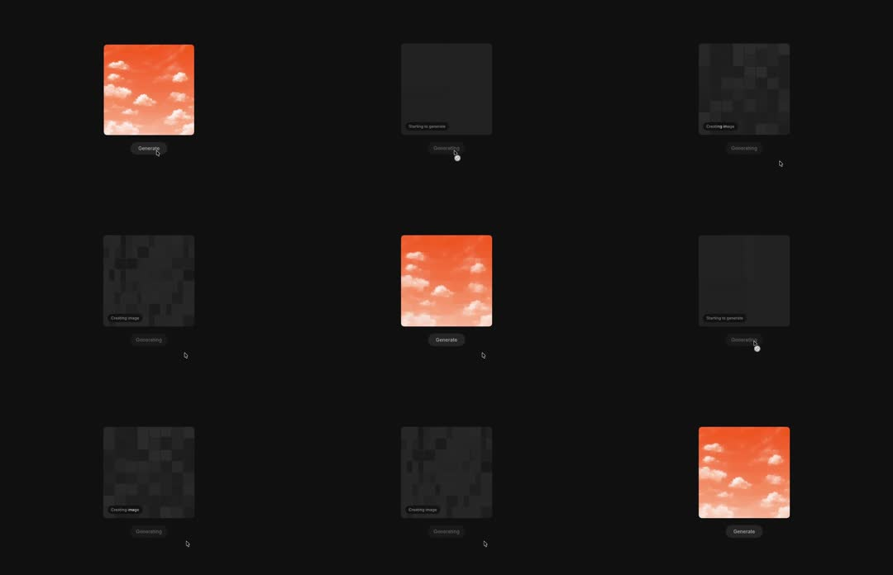

AI image-generation loading state: a dark placeholder card cycles through 'Starting to generate' and 'Creating image' captions while the image resolves through progressively finer pixelation - coarse grey mosaic blocks refine step by step until the final photo (orange sky with clouds) snaps in crisp; a 'Generate' pill below.

Build an AI-image loading reveal. Card 240x240, radius 12, dark (#111). On 'Generate': (1) current image fades to flat #1A1A1B with caption 'Starting to generate' (bottom-left, 12px muted) and the pill button swaps its label to an inline spinner. (2) After 600ms, render the target image pixelated: draw it to canvas at 20x20 and upscale with image-smoothing off (~12px blocks) - the mosaic should carry the photo's real average colors, not random noise; caption -> 'Creating image'; add a 4% opacity noise texture that jitters each frame. (3) Refine in discrete steps 12->6->3px every ~500ms (re-render at 40x40, 80x80). (4) Final step: full-res draw, then a quick white-point bloom (brightness 1.25 -> 1 over 300ms) so it 'snaps' into focus. Button returns to 'Generate'. Keep the mosaic region exactly the image bounds - no layout shift.